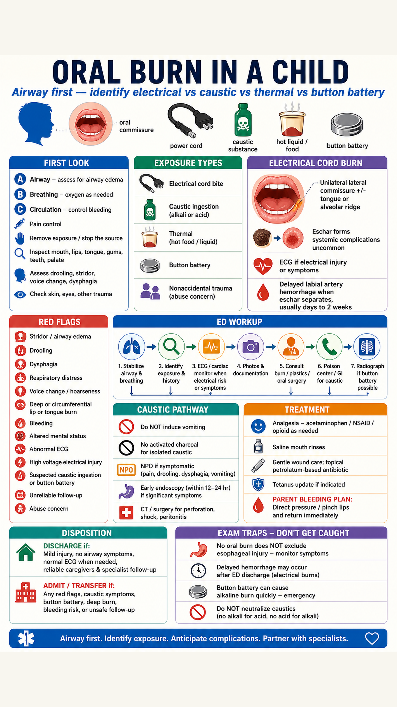

{kind=link}
{kind=link}
Oral Burn in a Child: Electrical Cord & Caustic ED Pathway
ED approach to pediatric oral burns focused on electrical cord commissure injury, caustic ingestion, thermal burns, and button battery mimics: airway red flags, labial artery delayed hemorrhage, ECG/monitoring, wound care, analgesia, specialist consultation, parent bleeding plan, and disposition.
ED framing
In Tintinalli, the classic pediatric oral burn is a child who bites a power cord, causing a unilateral lateral commissure burn. Most systemic complications are uncommon, but the high-yield danger is delayed labial artery bleeding when the eschar separates, plus functional/aesthetic mouth-contracture risk.
First look
Airway first Look for drooling, stridor, dysphonia/hoarseness, respiratory distress, expanding tongue/lip swelling, soot/smoke exposure, or inability to handle secretions.
Exposure split
Electrical cord/appliance bite; caustic alkali/acid cleaner; thermal food/liquid; button battery; medication/tablet burns; and nonaccidental trauma.
Electrical pattern
Unilateral oral commissure injury may involve tongue or alveolar ridge. Eschar/edema evolves over days. Ask voltage, duration, wet mouth, fall/trauma, LOC, chest symptoms, and tetany.
Caustic pattern
Oral burns, drooling, vomiting, food refusal, dysphagia, stridor, chest/abdominal pain, or significant oropharyngeal injury should trigger poison center/GI/surgery pathway.
Red flags
- Airway symptoms: stridor, drooling, voice change, respiratory distress, progressive edema, deep tongue/floor-of-mouth injury.
- Electrical risk: abnormal ECG, chest pain/palpitations, syncope/LOC, seizure, high voltage, transthoracic pathway, significant hand/skin burns, rhabdomyolysis concern, or associated trauma.
- Oral wound risk: deep commissure burn, active bleeding, expanding eschar, poor oral intake, dehydration, unreliable caregiver, inability to return rapidly, or concern for abuse.
- Caustic/button battery: suspected strong acid/alkali, significant symptoms, button battery possible, peritoneal signs, subcutaneous emphysema, shock, persistent acidosis, or GI bleeding.
ED decision pathway
1. Stabilize
ABCs, oxygen as needed, suction, analgesia, remove exposure, irrigate skin/eyes if contaminated, keep NPO when airway/esophageal injury is possible.
2. Document
Describe site, depth, commissure involvement, tongue/alveolar/palatal injury, bleeding, swelling, dental trauma, and take clinical photos if local policy allows.
3. Electrical workup
Obtain ECG. Monitor/admit if symptoms, abnormal ECG, high-voltage exposure, transthoracic path, LOC, cardiac history, or significant burns. Check CK/BMP/UA if muscle injury/rhabdo risk.
4. Caustic workup
Call poison center. For symptomatic or high-risk ingestion, involve GI/ENT/surgery. Labs and CT are driven by shock, perforation concern, severe acid/alkali, or intentional/uncertain ingestion.
5. Button battery
Radiograph neck/chest/abdomen if possible battery exposure, missing battery, drooling, dysphagia, unilateral discharge, or unclear history. Esophageal battery needs immediate removal.
6. Specialists
Burn center, plastic surgery, oral/maxillofacial surgery, ENT, dental, GI, child protection, and poison center depending on exposure type and severity.
Treatment table
| Action / medication | Pediatric dose or approach | Route / max | Contraindications, adverse effects, cautions |
|---|---|---|---|
| Acetaminophen | 10-15 mg/kg every 4-6 h as needed. | PO/PR/IV. Common max 75 mg/kg/day or 4 g/day, whichever is lower. | Use weight-based dosing. Avoid overdose; reduce/avoid with significant hepatic disease or repeated supratherapeutic dosing risk. |
| Ibuprofen | 10 mg/kg every 6-8 h as needed. | PO. Max 40 mg/kg/day. | Avoid in dehydration, renal disease, significant GI bleeding risk, NSAID allergy, or infants below local age cutoff. |
| Intranasal/IV fentanyl | 1-2 mcg/kg for severe pain/procedure support; titrate carefully. | IN/IV. Follow local sedation/analgesia policy. | Respiratory depression; monitor continuously. Do not let analgesia delay airway control or transfer when needed. |
| Morphine | 0.05-0.1 mg/kg IV/IM for severe pain. | IV/IM; titrate to effect. | Respiratory depression, hypotension, nausea. Use caution in shock, altered mental status, airway risk. |
| Oral wound care | Gentle saline mouth rinses when developmentally safe; soft diet when allowed; gentle debridement only as directed by specialist. | Topical/supportive. | Avoid aggressive manipulation of eschar. Do not neutralize caustics. Do not use activated charcoal for isolated caustic ingestion. |
| Topical petrolatum-based antibiotic | Thin layer to external lip/commissure burn if recommended by burn/plastics. | Topical. | Avoid intraoral swallowing-heavy application. Watch allergy/contact dermatitis. Not a substitute for specialist follow-up/splinting. |
| Tetanus prophylaxis | Update based on immunization status and wound type. | IM vaccine +/- TIG per standard tetanus guidance. | Check prior vaccines and contraindications; coordinate with pediatric immunization schedule. |
Parent bleeding plan for electrical commissure burn
- Delayed hemorrhage can occur after discharge when the eschar separates. Tintinalli notes severe labial artery bleeding in up to 10% of cases, usually after 5 days; other reviews describe bleeding between 1-2 weeks and up to 25% in some series.
- Before discharge, demonstrate direct pressure: pinch/compress the bleeding lip/commissure firmly with gauze and return immediately or call EMS.
- Discharge only if caregivers are reliable, understand the bleeding plan, can return quickly, and specialty follow-up is secured.
Caustic ingestion rules
- Do not induce vomiting, do not give ipecac, do not neutralize acid with alkali or alkali with acid, and do not use activated charcoal for isolated caustic ingestion.
- If prehospital and the child is conscious, not seizing, and able to swallow, Poison Control allows a small amount of water or milk for burning/irritating/caustic swallowed products, then poison center guidance.
- Serious esophageal injury may occur without obvious oral burns, but Tintinalli notes serious accidental pediatric injuries usually have signs such as stridor, drooling, vomiting, food refusal, or significant oropharyngeal burns.
- Early endoscopy is recommended for signs/symptoms of significant injury; emergency surgery/CT pathway for perforation, peritoneal signs, free air, shock, respiratory distress, persistent lactic acidosis, ascites, or pleural fluid.
Disposition
- Discharge: mild superficial oral/thermal injury, no airway or caustic symptoms, normal ECG when electrical risk applies, good oral intake/pain control, reliable caregivers, rapid return access, and burn/plastics/oral surgery follow-up when commissure is involved.
- Observe/admit/transfer: any airway red flag, symptomatic caustic ingestion, button battery concern, deep commissure/tongue/floor burn, active bleeding, abnormal ECG, high-voltage/systemic electrical injury, dehydration/poor PO, need for procedure/splinting, or unsafe follow-up.
- Child protection: inconsistent mechanism, patterned burns, delay in care, multiple injuries, or developmental mismatch should trigger safeguarding evaluation.
Exam traps
- Delayed labial artery hemorrhage is the testable trap: it may not be present during the ED visit.
- No visible oral burn does not fully exclude esophageal caustic injury; symptoms and exposure drive endoscopy discussion.
- Do not manipulate or remove a mature commissure eschar casually; it can uncover vascular injury.
- Button batteries are not just foreign bodies; they generate local alkaline burns and can perforate rapidly when lodged in the esophagus.
- Normal-looking low-voltage oral burn can still scar and restrict mouth opening without specialist follow-up and splint planning.
Sources
- Primary source: local Tintinalli 9th PDF text extract, mainly Chapter 219 Electrical and Lightning Injuries, Chapter 217 Thermal Burns, Chapter 200 Caustic Ingestions, and Chapter 77 Esophageal Emergencies/button battery.
- External cross-check: NCBI StatPearls Electrical Injuries, Pediatric Oral Commissure Burn, PMC, and Poison Control first aid for swallowed caustics.
- Image workflow: main visual generated with Codex built-in
image_gen, then resized/padded to 2160x3840 and upscaled to 4320x7680. No deterministic poster replaced the generated visual.